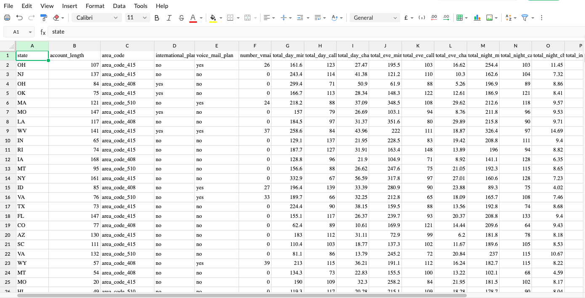
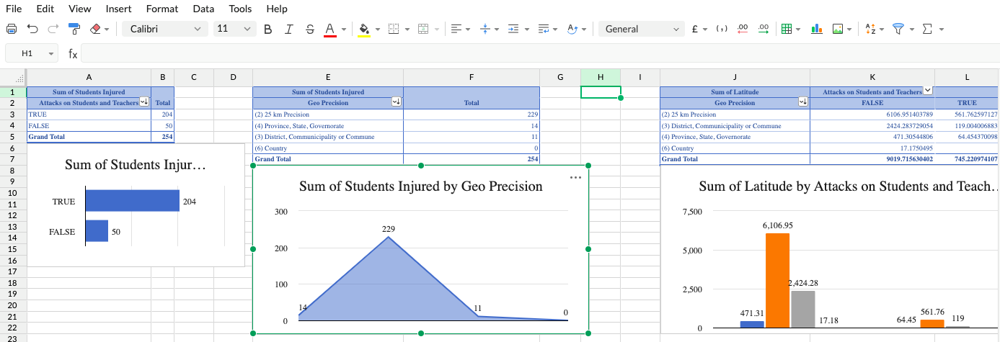
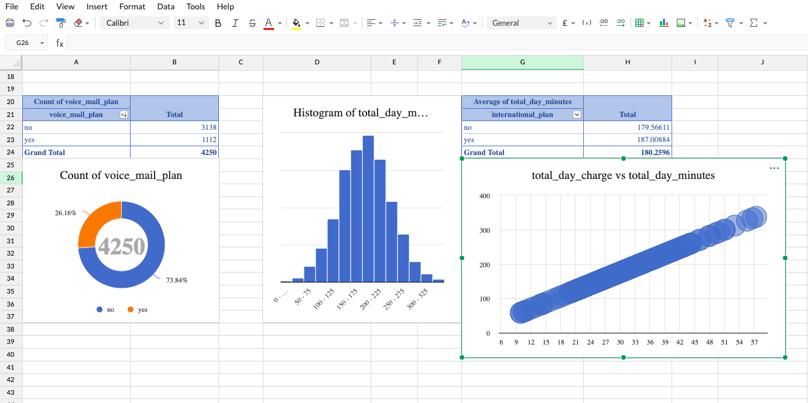
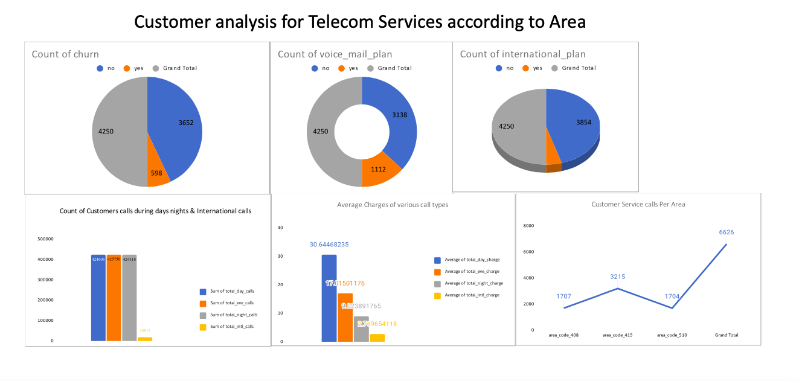
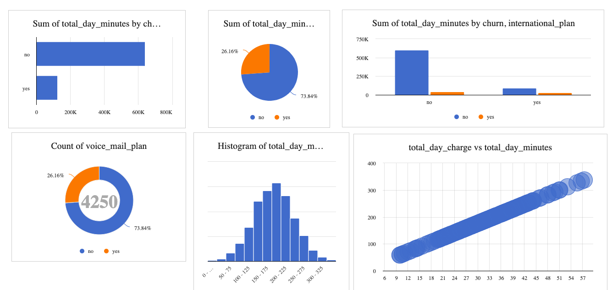

Project Details
Churn Predection Telecom
Introduction
This project involved using Excel to analyze telecom customer data to identify trends and patterns related to service usage and churn risk. The goal was to uncover insights to improve customer retention.
Data Overview 📈
The core telecom dataset provided details on minutes of use, charges, subscribed plans, and churn status across thousands of customers. Additional data shaping was done in Excel for analysis. 
Analysis Approach
Leveraging pivot tables, data modeling, and visualizations within Excel workbooks - including column/bar charts, histograms, correlation plots etc. - various comparisons and relationships were analyzed to identify drivers of churn.
 Key Insights
Key trends uncovered included higher churn likelihood for customers without voicemail plans or international plans. Total minutes of use histograms revealed additional behavioral patterns amongst churned customers.
 Recommendations
Identify high-value customers based on usage who may be at churn risk and proactively offer discounted international plan upgrades with voicemail bundles to incentivize loyalty.